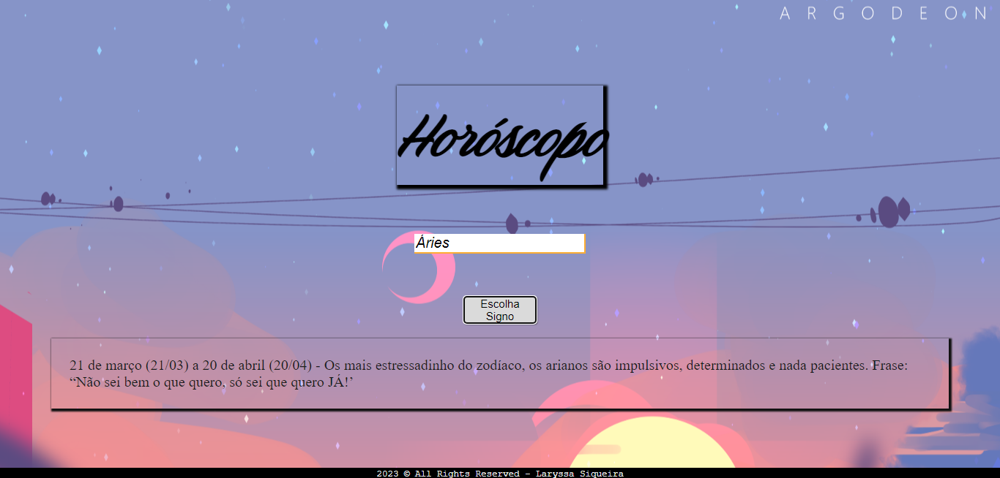

Projetos Tech
Início
Cronômetro com HTML, CSS e JavaScript.
Clique na imagem para conhecer melhor o projeto.
Galeria de Fotos com HTML e CSS.
Clique na imagem para conhecer melhor o projeto.
Calculadora de IMC com HTML, CSS e JavaScript.
Clique na imagem para conhecer melhor o projeto.
Página que gera tabuada com HTML, CSS e JavaScript.
Clique na imagem para conhecer melhor o projeto.

Projeto que gera definição de cada signo. Com HTML, CSS e JavaScript.
Clique na imagem para conhecer melhor o projeto.